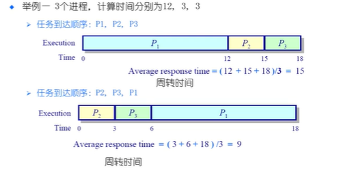

调度算法
六种常用的基础调度算法
- FCFS
- 先来先服务
- First come ,First served
- SPN(SJF) SRT
- 短进程优先（短作业优先）短剩余时间优先
- shortest proess next
- short job first
- shortest remaining time
- HRRN
- 最高响应比优先
- highest response ratio next
- Rond Robin
- 轮番
- 使用时间切片和抢占来轮流执行任务
- Multilevel Feefback Queues
- 多级反馈队列
- 优先级队列中的轮番
- Fair Share Scheduling
- 公平共享调度
FCFS
* 如果进程在执行中阻塞，队列中的下一个会得到cpu

FCFS特点
- 有点
- 简单
- 缺点
- 平均等待时间波动大
- 花费时间少的任务可能排在花费时间长的任务后面
- 可能导致IO和CPU之间的重叠
- cpu密集型进程会导致IO设备闲置时，IO密集型进程在等待
选择下一个最短的进程（短进程优先）
- 按照预测的完成时间来将任务入队
- 可以是可抢占的或不可抢占的
- 可抢占：又叫 剩余最短时间
- （shortest-remaining-time SRT）
- 可抢占：又叫 剩余最短时间

-
最优平均等待时间

-
问题：
- 可能导致饥饿
- 联系的短任务流会导致长任务饥饿
- 短任务可用时的任何长任务的CPU时间都会增加平均等待时间
- 需要预估未来
- 怎么预估下一个CPU突发的持续时间
- 简单的解决办法：询问用户
- 如果用户欺骗就杀死进程
- 如果不知道怎么办
- 可能导致饥饿

最高响应比优先
* 在spn调度的基础上改进
* 不可抢占
* 关注进程等待了多长时间
* 防止无限期延迟

轮询
-
各个进程轮流占用cpu执行
-

RR 花销：额外的上下文切换 -
时间量子太大（单个时间片）
- 等待时间过长
- 极端情况下退化成FCFS
-
时间量子太小
- 反应迅速，但是
- 吞吐量由于大量的上下文切换开销收到影响
-
目标：
- 选择一个合适的时间量子
- 经验规则：维持上下文切换开销处于1%以内。

MFQ
- 就绪队列被分为独立的队列：
- e.g. 前台（交互），后台（批处理）
- 每个队列拥有自己的调度策略
- e.g. 前台-RR 后台-FCFS
- 调度必须在队列间进行
- 固定优先级
- 先处理前台，然后处理后台
- 可能导致饥饿
- 时间切片
- 每个队列都得到一个固定的能够调度其进程的CPU总时间
- E.g. 80%个使用RR的前台，20%给使用FCFS的后台
- 固定优先级
- 一个进程可以在不同的队列中移动
- 例如：n级优先级-优先级调度在所有级别中，RR在每个级别中
- 时间量子大小随优先级增加而增加
- 如果任务在当前的时间量子中没有完成，则降到下一个优先级
- 优点：
- CPU密集型任务的优先级下降很快
- IO密集型任务停留在高优先级

FSS控制用户对系统资源的访问
- 一些用户组比其他用户组更重要
- 保证不重要的组无法垄断新资源
- 未使用的资源按照每个组所分配的资源的比例来分配
- 没有达到资源使用率目标的组来获得更高的优先级
总结：
- FCFS 先来先服务
- 不公平，平均等待时间差
- SPN/SRT 段进程优先
- 不公平，但是平均等待时间最小
- 需要精确预测和计算时间
- 可能导致饥饿
- HRRN 最高响应比优先
- 基于SPN调度改进
- 不可抢占
- Round Robin 轮番
- 公平，但是平均等待时间较差
- MLFQ 多级反馈队列
- 和SPN类似
- FSS 公平共享调度
- 公平是第一要素